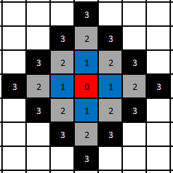
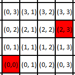
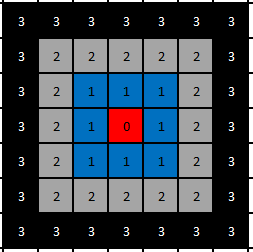
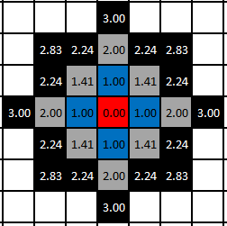

Measuring Distance
The Distance class provides ways to measure the distance between two points, using various distance calculation algorithms.
Like many grid-related classes, the Distance class cannot be instantiated by the user; instead, three instances are provided as static fields of the Distance class, which represent the possible ways of calculating Distance on an integer-based grid. These calculations and their GoRogue representations are detailed below.
Methods of Calculating Distance
There are generally 3 ways to measure the distance between two points on an integer-based 2D grid. Each method defines space in a different way, affecting not only the distance between two specific points, but as a result, the shape of a "radius" around any given point -- eg. which tiles are within x units of a given position.
Manhattan Distance
The Manhattan distance calculation measures grid distance in terms of only horizontal and vertical movement. The most direct path between two points is the shortest one that moves only in horizontal or vertical steps.
In the image below, the red square represents an arbitrary starting location. The blue squares indicate locations within 1 distance unit of the starting location, according to Manhattan distance. Similarly, the grey squares indicate those locations within 2 units, and the black squares represent those within 3:

As a result of this definition, the radius around a given point ends up forming a diamond shape. Manhattan distance is generally a useful distance measurement in games that only allow 4-way movement, since the distance measurement by definition aligns with possible movement directions.
Chebyshev Distance
The Chebyshev distance calculation, commonly known as the "maximum metric" in mathematics, measures distance between two points as the maximum difference over any of their axis values. In a 2D grid, for instance, if we have two points (x1, y1), and (x2, y2), the Chebyshev distance between is max(y2 - y1, x2 - x1).

On the above grid, the difference in the x-value of the two red points is 2-0=2, and the difference in the y-values is 3-0=3. The maximum of 2 and 3 is 3, and thus the Chebyshev distance between the two points is 3 units.
Practically, on a grid, Chebyshev distance represents distance measured as if the shortest path between two points can take steps in any of the 8 grid directions at equal cost. In the image below, the red square represents an arbitrary starting location. The blue squares indicate locations within 1 distance unit of the starting location, according to Chebyshev distance. Similarly, the grey squares indicate those locations within 2 units, and the black squares represent those within 3:

The resulting shape of the radius formed is a square. Thus, by definition, Chebyshev distance is generally a useful distance measurement in games that allow unrestricted 8-way movement, where moving diagonally costs no more than moving in a cardinal direction.
Euclidean Distance
The Euclidean distance measurement is the most common definition of distance according a mathematical (Euclidean) coordinate plane. Distance between two points is defined as the length of a line segment connecting them. In 2D, given 2 points (x1, y1) and (x2, y2), the Euclidean distance between them is defined as sqrt((x2-x1)^2 + (y2-y1)^2).
In the image below, the red square represents an arbitrary starting location. The blue squares indicate locations within 1 distance unit of the starting location, according to Euclidean distance. Similarly, the grey squares indicate those locations within 2 units, and the black squares represent those within 3:

Note that the diagonal neighbors of the starting location are considered to be approximately 1.41 units away from the starting location, while cardinal neighbors are 1 unit away. Thus, the radius shape formed by Euclidean distance is a circle (or in the case of a integer-based grid, a close approximation). While Euclidean distance does not generally match a particular movement scheme on an integer-based grid, it can be useful in any case where straight-line distance is desired.
GoRogue Representations
GoRogue representations of these distance calculation methods are straightforward. The Distance.MANHATTAN instance represents the Manhattan distance calculation, Distance.CHEBYSHEV represents the Chebyshev distance calculation, and Distance.EUCLIDEAN represents the Euclidean distance calculation.
Getting Distance Between Locations
Calculating distances using these instances is straightforward -- each instance has a Calculate method that takes two points in some form (or the delta-x/delta-y values between two points), and returns the distance between them:
Coord start = (0, 0);
Coord end = (2, 3);
double distance = Distance.MANHATTAN.Calculate(start, end);
// Takes two points as integers instead of Coords
double distance2 = Distance.CHEBYSHEV.Calculate(0, 0, 2, 3);
// Takes dx/dy between two points
double distance3 = Distance.EUCLIDEAN.Calculate(end - start);
Implicit Conversions for Related Types
For any given Radius instance, a method of calculating Distance is implied, based on the definition of a radius. Therefore, Radius instances may be implicitly converted to their corresponding Distance instances. As a result of this, any function that accepts a parameter of type Distance may also simply be passed a Radius instance, and that instance will be converted to the corresponding Distance automatically.
The correspondance between Radius instances and Distance instances is as follows:
Radius.CIRCLEorRadius.SPHERE->Distance.EUCLIDEANRadius.SQUAREorRadius.CUBE->Distance.CHEBYSHEVRadius.DIAMONDorRadius.OCTAHEDRON->Distance.DIAMOND
A demonstration of some of these conversions can be seen via the following code:
// This code functions without compiler error, since implicit conversions are defined.
Distance distanceCalc = Radius.SQUARE;
// Assuming a function MyFunc(Distance distanceCalc) is defined
MyFunc(Radius.DIAMOND);
Since the definition of distance also implies a method for determining adjacent locations, Distance also implicitly converts to corresponding AdjacencyRule instances. Those conversions are covered in the AdjacencyRule documentation.
Explicit Conversions for Related Types
As discussed above, a Radius instance, by definition of what it represents, implies a corresponding Distance instance. Similarly, it is also true that a Distance instance by definition implies a 2D radius shape. Becuase GoRogue has Radius instances for both 2D and 3D shapes, the conversion cannot be implicit, however this conversion can be performed via a provided explicit conversion operator.
The correspondance between Radius instances and Distance instances is as follows:
Distance.EUCLIDEAN->Radius.CIRCLEDistance.CHEBYSHEV->Radius.SQUAREDistance.MANHATTAN->Radius.DIAMOND
A demonstration of some of these conversions can be seen via the following code:
// This code functions without compiler error, since implicit conversions are defined.
Radius shape = (Radius)Distance.MANHATTAN;
// Assuming a function MyFunc(Radius shape) is defined
MyFunc((Radius)Distance.CHEBYSHEV);